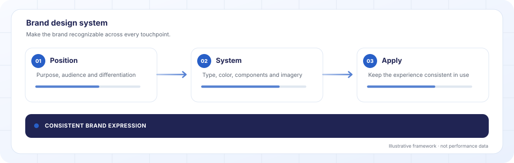

Looking for a specialist branding and design agency?
An identity that makes every surface recognisable. OrcaPulse builds brand strategy, identity systems and operating guidelines for ambitious brands worldwide.

Illustrative workflow, not client performance data.
What we do, in one paragraph.
We handle positioning, identity design (logo, type, color, mark), the full system (components, templates, voice), and the documentation your team actually uses.
The funnel, in plain words.
TOFU, MOFU, BOFU not jargon. Just where in the journey a buyer is, and what Brand & Design does at each stage.
Where this gets executed.
Not every channel for every client. We pick based on your market, buyer and goal.
The real reasons businesses contact us about Brand & Design.
If more than two of these feel familiar, it's probably time to talk.
- Your brand looks different on every surface.
- Each designer who touches your brand reinvents it slightly.
- Your logo is fine but the system around it is a mess.
- You have brand guidelines but nobody follows them.
- You're mid-raise, mid-scale, mid-rebrand and the current brand is holding you back.
- You can't tell your mother what you do in a sentence.
Honest about fit.
Not everyone should buy this. Here's who it works for and when we'd tell you to spend the money differently.
Right fit when
- You have real reason to rebrand not just boredom with the current one.
- You can give us access to your customers, team and competitors for research.
- You can commit 8–14 weeks to the process.
- You're willing to make hard positioning calls.
- You trust that strategy and design are not separate.
Wrong fit when
- You just want a new logo.
- You expect the full rebrand in 3 weeks.
- You have no clear reason the current brand isn't working.
- You need the committee's unanimous approval on every decision.
- You believe strategy is unnecessary if the design looks nice.
How we measure and scale.
The metrics we track, and what we do once we have a winner.
- Consistency score across surfaces (audited quarterly).
- Brand recall in buyer research.
- Qualified lead quality lift post-rebrand.
- Sales cycle shortening (clearer brand = faster buyer decisions).
- Partnership and PR inbound increase.
- 01Roll the system out across remaining surfaces in sequence.
- 02Train the in-house team on guidelines.
- 03Steward quarterly audit drift, update components, extend into new categories.
- 04Open the system up to partners and licensees (where relevant).
How we actually run this.
The first 30 days.
Three things happen when we start: we identify the tests, gather the data, and set expectations against a realistic timeline.
- Positioning statement the one sentence everything else is built from.
- Logo stress-test small sizes, dark/light, bad backgrounds.
- Type system headline + body + accent, tested across content.
- Color system in context, not on a dieline.
- Voice test same message, written three different ways, which feels right.
- Current brand assets (logo files, color codes, type specs).
- Access to existing customers for interviews.
- Competitor list for teardown.
- Product / service portfolio and roadmap.
- Business goals (next 2–3 years).
The common mistakes.
The patterns we see repeated across underperforming programs. Fix any of these and performance usually moves immediately.
Starting with the logo.
Positioning first. The logo is the last 10% of the project, not the first.
Skipping the audit of what works.
Equity exists. Changing too much destroys it.
Designing in isolation.
Logos look great on a dieline. The real test is email, pitch deck, Instagram story.
Writing aspirational guidelines.
Guidelines nobody uses are worse than no guidelines. Write for the designer who's never read the brand book.
How pricing works.
One flat fee per quarter, agreed before we start. We do not take a percentage of your ad spend.
One flat quarterly fee
You get one price for the quarter. No hourly billing and no surprise invoices.
Priced by scope
The fee depends on what is in scope for Brand & Design: the work to be done, the markets covered and how much has to be built from scratch.
A quote after one call
We scope it together on a 30-minute call, then send a fixed price. If we are not the right fit, we tell you.
Ad spend and other third-party costs are separate and agreed with you in advance.
Common questions.
The real questions prospects ask us before signing an engagement.
How long does a brand project take?+
8–14 weeks for most engagements, depending on scope and research depth. Rush timelines are possible but produce worse work.
Rebrand or new brand?+
Both. For rebrands, we audit what equity exists before touching it. Most brands lose more by changing too much than by changing too little.
Strategy without design?+
Yes. We write the positioning, narrative and personality document. Your existing design team or another agency can execute.
What size organisations do you work with?+
Founder-led startups preparing to raise through mid-market businesses rebranding at $20–200M revenue.
Will the logo change?+
Sometimes. Often not. We evaluate equity first. If the current logo is working, we modernise rather than replace.
How do you handle Arabic typography?+
We work with Arabic type specialists on every brand with a GCC audience. The RTL + LTR system is designed in parallel, not an afterthought.
What's a steward retainer?+
A small quarterly engagement where we audit how the brand is being used, update components as needed, and prevent the drift that undoes most rebrands.
Ready to grow?
Thirty minutes. No pitch—just a frank conversation about where growth is leaking and which fixes matter most.
Book a Strategy Call